Lenguajes
15- C# (principal)
- SQL / T-SQL (principal)
- TypeScript (principal)
- JavaScript (principal)
- HTML
- CSS
- Dart
- Java 17 (Swing)
- Python
- C
- PL/pgSQL
- R
- Visual Basic .NET
- Visual FoxPro
- Groovy
Full Stack .NET · +5 años en IT C# · .NET 8 · ASP.NET Core · SQL Server · Angular · React · TypeScript
Desarrollo software de negocio de punta a punta: backend en C# y .NET, SQL Server y frontend en Angular y React, con IA aplicada al desarrollo. Busco trabajo remoto para Latinoamérica y otros países en español, o híbrido en Buenos Aires.
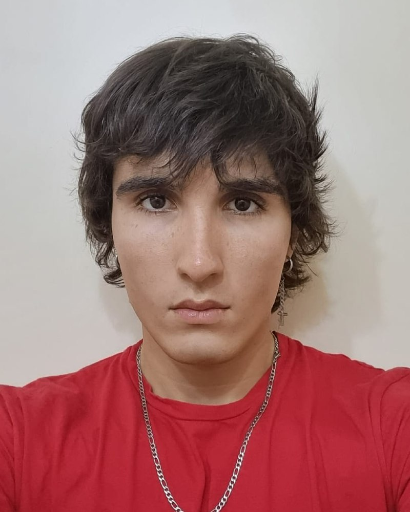
Especialidad
Backend, frontend y bases de datos
> claude --analyze-candidate "Lautaro"
[OK] Full Stack .NET · +5 años en IT ready
>
GMT-3
Hora de referencia
Proyecto principal
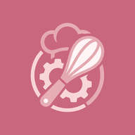
SousChefUn asistente que contesta WhatsApp, Instagram y Messenger, y una app que ordena el negocio de una repostera.
En producción Ver el caso completo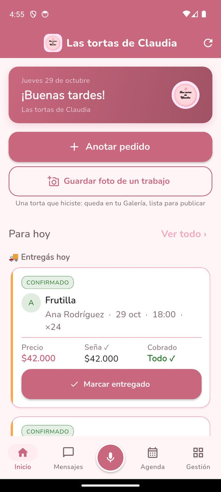
Uso a diario
01 Proyecto principal · caso de estudio
Contesta los mensajes y ordena el negocio, mientras la repostera hornea.
Plataforma multi-tenant para reposteras artesanales. Hace dos cosas que hoy se hacen a mano y en paralelo: atender los mensajes de las clientas y administrar el negocio.
Video del producto
1 min · sin sonido · en loop
Mi rol
IA aplicada al desarrollo: dirijo agentes Claude Code, reviso cada cambio y verifico con pruebas. Integro Claude, Gemini y Groq, con evaluaciones en promptfoo y observabilidad en Langfuse.
Modelo de negocio
El plan Pro es una suscripción paga que se cobra por MercadoPago.
Trabajo 1 Atender
El asistente contesta por WhatsApp, Instagram y Messenger: responde consultas, toma los datos del pedido y le pasa la conversación a la dueña cuando hace falta criterio. Nunca da precios ni toca la plata: la venta la cierra ella.
Lo que ve la clienta
Sofía Pérez
Lo que va anotando el asistente
Lo que le llega a la dueña
PendientePedido en borrador
Sofía Pérez
La clienta preguntó el precio en el primer mensaje. El asistente no lo contesta: junta lo que hace falta para cotizar y deja el pedido listo para que Claudia lo confirme.
Trabajo 2 Administrar
Pedidos y sus estados, producción por día, semana y mes, agenda, clientas, costos y precios, recetas e insumos, stock, lista de compras, saldos a cobrar, galería de trabajos y cierre del mes. Diez pantallas para recorrer:
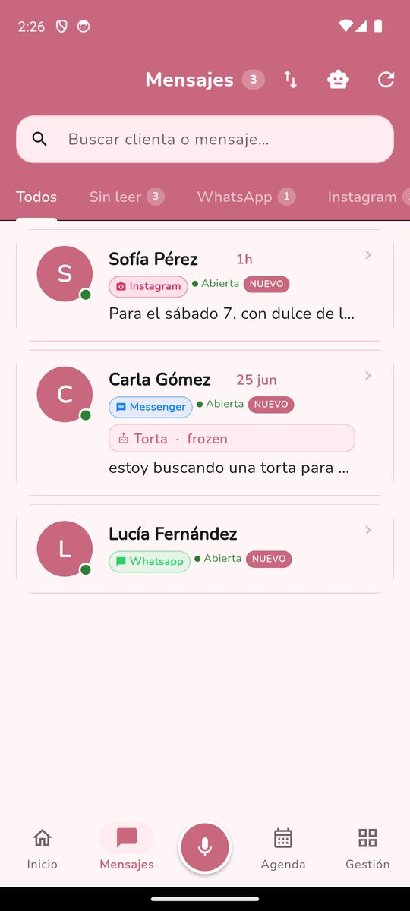
01 Mensajes
Las conversaciones de WhatsApp, Instagram y Messenger llegan a la misma lista, con pestañas por canal y por no leídos. En la captura hay tres chats abiertos, uno por cada canal.
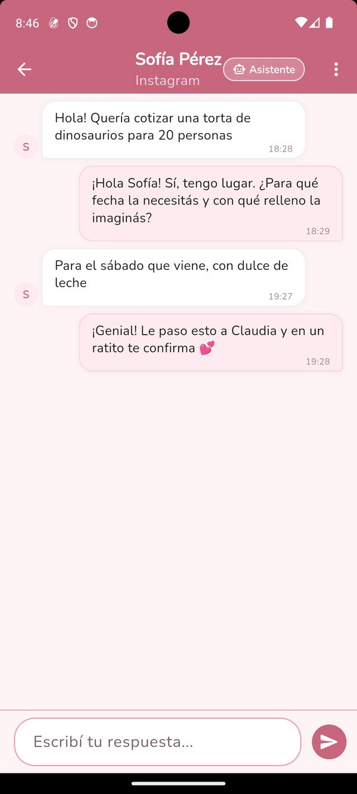
02 Conversación
Sofía pide cotizar una torta de dinosaurios para 20 personas. El asistente pregunta fecha y relleno y cierra con «Le paso esto a Claudia y en un ratito te confirma». Arriba, el botón «Asistente» del chat.
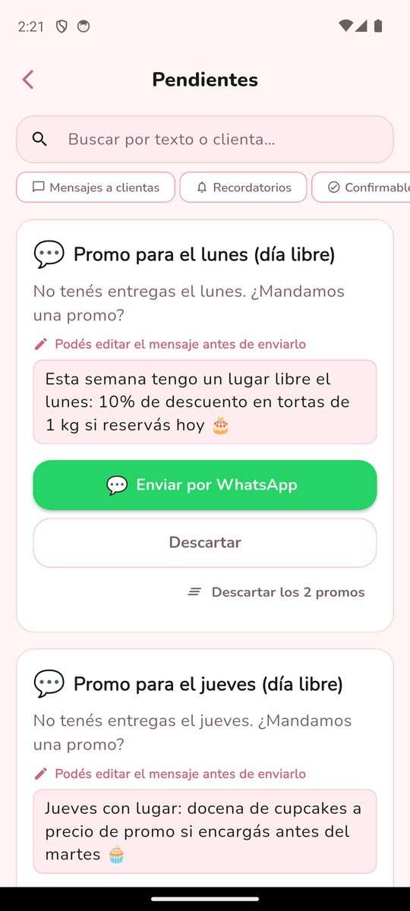
03 Pendientes
Como el lunes no hay entregas, sugiere mandar una promo. El texto se puede editar antes de tocar «Enviar por WhatsApp» o «Descartar»: nada le llega a una clienta sin ese OK.
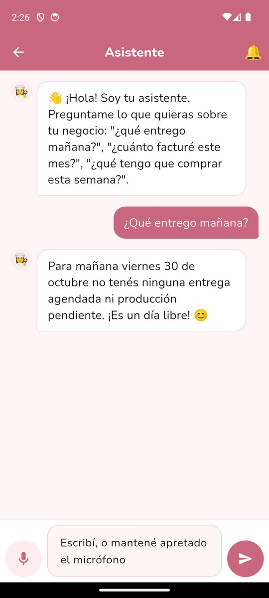
04 Asistente personal
«¿Qué entrego mañana?» y responde con los datos de la app: ese viernes no hay entregas ni producción pendiente. Se le escribe o se mantiene apretado el micrófono.
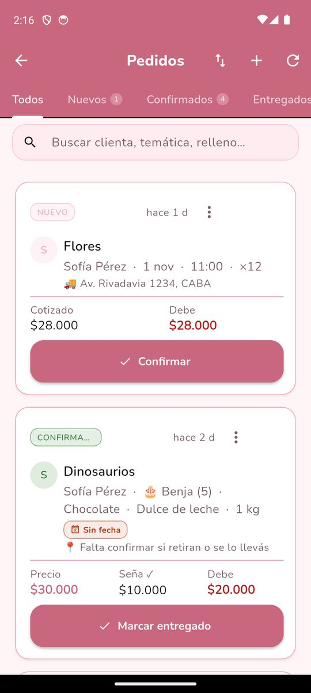
05 Pedidos
Pestañas por estado y, en cada tarjeta, precio, seña y lo que falta cobrar. Arriba, un pedido nuevo cotizado en $28.000 esperando «Confirmar»; abajo, uno confirmado que debe $20.000.
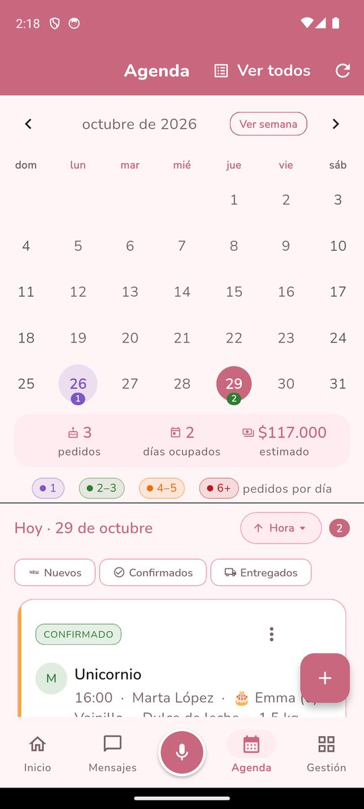
06 Agenda
Calendario con los días marcados según cuántos pedidos tienen y el resumen del mes: 3 pedidos, 2 días ocupados y $117.000 estimados. Debajo, los pedidos de hoy.
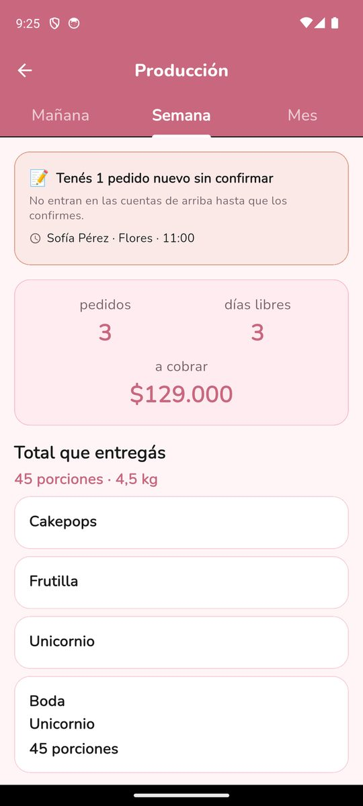
07 Producción
Vistas por mañana, semana y mes. En la semana de la captura: 3 pedidos, 3 días libres, $129.000 a cobrar y el total a entregar, 45 porciones y 4,5 kg.
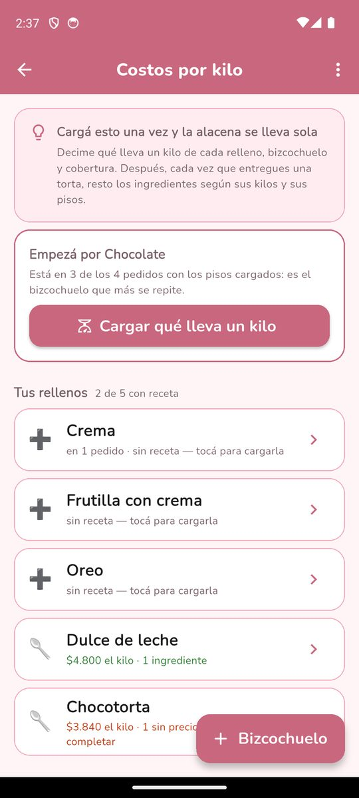
08 Costos
Se carga una vez qué lleva un kilo de cada relleno, bizcochuelo y cobertura. La app calcula el costo (dulce de leche: $4.800 el kilo) y descuenta ingredientes de la alacena con cada entrega.
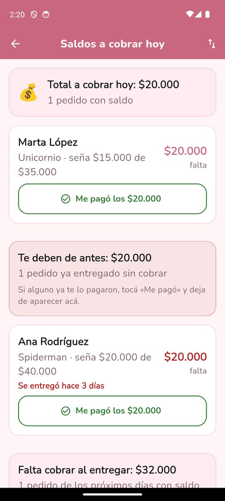
09 Saldos
El total a cobrar hoy ($20.000), lo que quedó debiendo un pedido ya entregado y lo que falta cobrar en los próximos días. Un toque en «Me pagó» y el saldo queda al día.
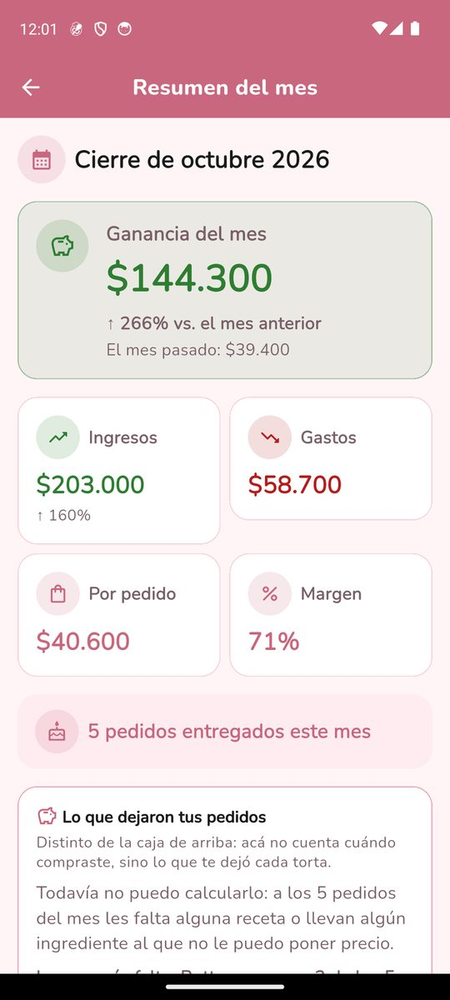
10 Cierre del mes
Octubre de 2026: ganancia $144.300, ingresos $203.000, gastos $58.700, $40.600 por pedido y margen del 71%, comparado contra el mes anterior.
Teléfono y tablet
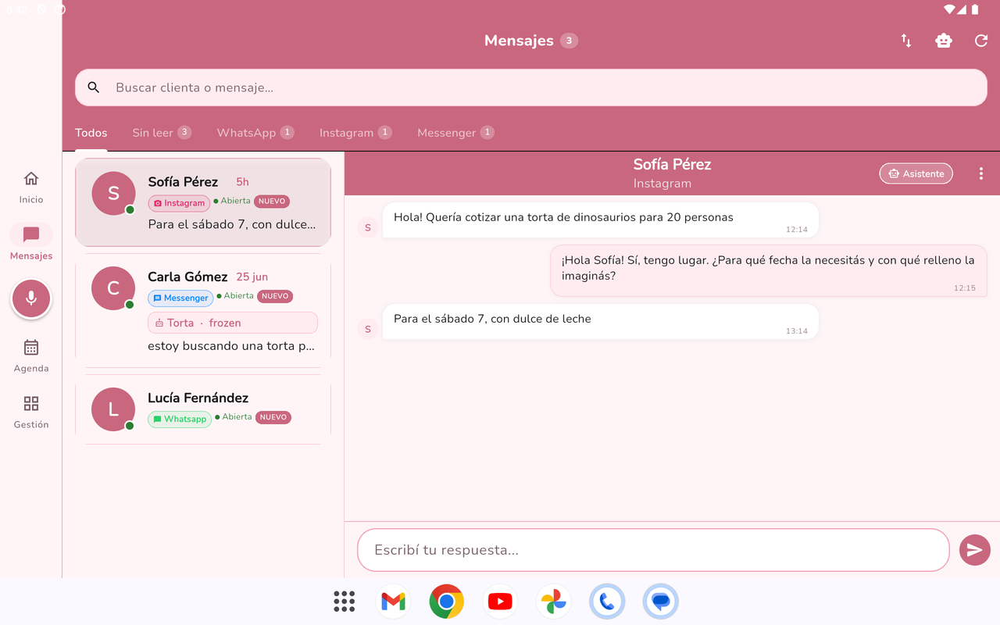
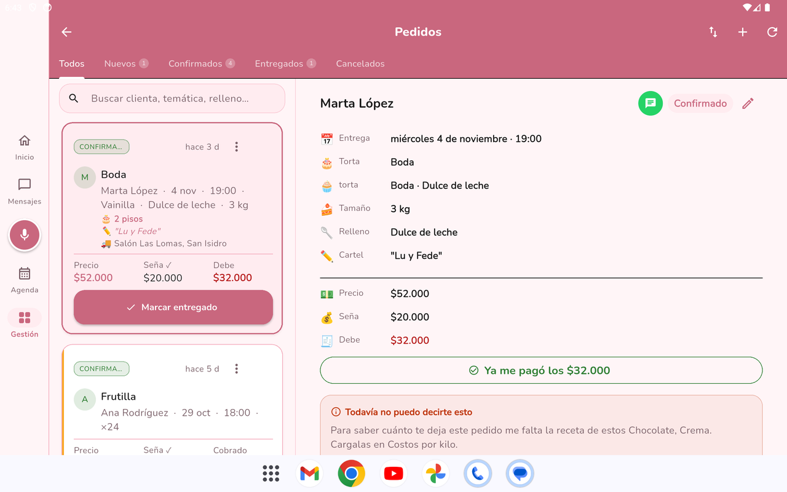
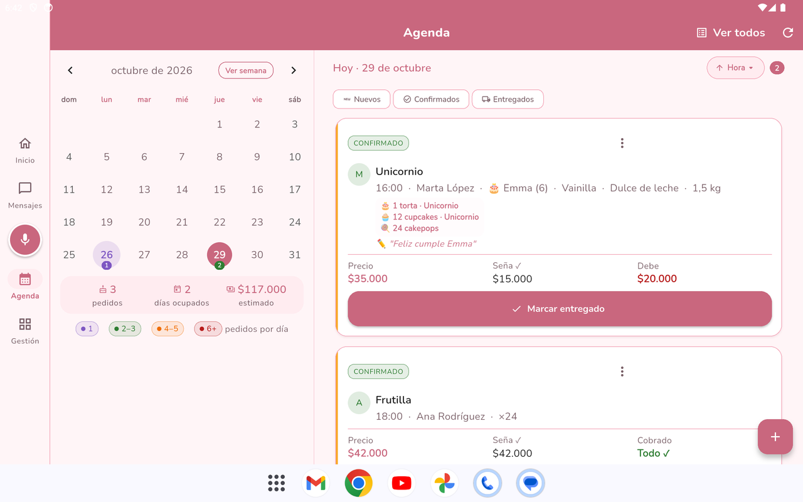
La bandeja queda a la izquierda y la conversación abierta a la derecha. La navegación pasa a un riel lateral, con el micrófono del asistente siempre a mano.
La lista de pedidos a la izquierda y, al lado, el detalle del pedido elegido: entrega, tamaño, relleno, cartel, precio, seña y saldo.
El calendario del mes y los pedidos del día en la misma pantalla, sin ir y volver.
Motor proactivo
No le escribe a ningún cliente sin aprobación de la dueña.
Asistente personal
Lo delicado no se ejecuta solo: queda en Pendientes hasta que la dueña da el OK.
Recorrido completo
Un recorrido con voz por las pantallas de SousChef, de Inicio a las herramientas de gestión. No arranca solo: dale play cuando quieras.
Por dentro Para quien quiera profundidad técnica
Números contados en el repo, la arquitectura, las protecciones del bot y las decisiones que las explican.
Contado en el repo
1.057
tests automatizados
Arquitectura · vista de contexto
Cómo se protege el bot
Decisiones de diseño
Un error del modelo cuesta una respuesta floja, no plata.
El asistente junta datos y propone; la venta la cierra la dueña.
Con Row Level Security, si un endpoint se olvida un filtro, la base igual lo aplica.
Ningún proveedor solo es lo bastante confiable: se degrada la calidad antes que caerse.
Los webhooks son adaptadores y todo el bot vive en un módulo compartido: los tres canales se comportan igual.
Evals con promptfoo y trazas en Langfuse antes de cambiar un prompt.
Informe de arquitectura, documentación funcional, manual de usuario con 70 capturas, runbook de operaciones y textos legales.
Stack de SousChef
En producción
Está en línea. Se puede entrar a ver.
En producción en una pyme de repostería con 13 años de actividad, que antes llevaba todo en papel.
02 Stack completo
Todo lo que manejo. Las principales van resaltadas; filtrá por categoría o por tipo.
Arquitectura y diseño: Microservicios, Clean Architecture y Patrones de Diseño.
03 Trayectoria
jul 2025 – nov 2026SWS ServicesRemoto
mar 2023 – jul 2025Baufest · cliente CencosudEquipo de 6 a 10 · Scrum
ago 2021 – mar 2023Voolkia · cliente Mercado Libre
04 Proyecto propio · en desarrollo
Plataforma de progreso físico y posing para culturismo clásico: del atleta que compite al que solo entrena. Mide el cuerpo y la pose con la cámara del teléfono y le muestra a cada persona cómo evoluciona.
La visión por computadora corre entera en el teléfono con MediaPipe: la foto nunca sale del dispositivo, solo viaja el vector de puntos del cuerpo. Eso permite un plan gratuito sin costo de servidor por atleta.
La idea central
Sin fotos en el servidor, el plan gratuito no tiene costo de servidor por atleta.
Monorepo TypeScript
05 Primeros proyectos · secundaria técnica
Tres proyectos del colegio, en la E.T. N°35 «Ing. E. Latzina». Son los primeros sistemas que hice: quedan acá, con el repositorio a la vista, para mostrar de dónde vengo.
2019
Sistema de gestión para el buffet de un club deportivo: comidas y kiosco, mesas y menús diarios, ventas a socios, cuentas corrientes, stock y pago a proveedores, caja diaria y mensual, y alquiler del salón. Incluyó análisis, documentación del sistema y manual de usuario.
Repo2020
Sistema de gestión de pedidos y repartos por zonas de la Ciudad de Buenos Aires, con locales adheridos y repartidores asignados por zona. Incluyó análisis, diccionario de datos, documentación y manual de usuario.
Repo2020
Versión del juego para uno o dos jugadores, con un modo carrera en red: servidor propio, colisiones, animaciones, cámara, contador y sonido.
Repo06 Contacto
Busco un puesto de desarrollador .NET o full stack. Disponibilidad inmediata.